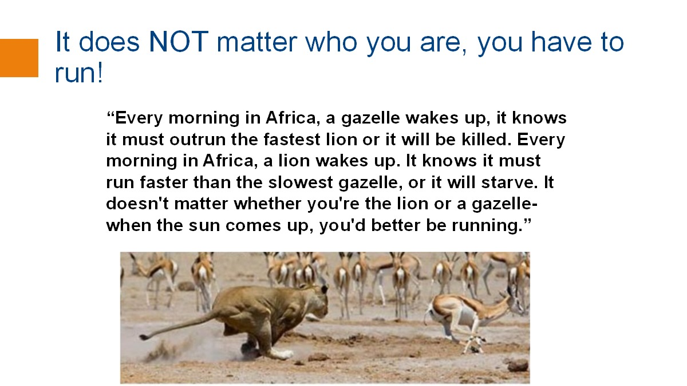

Philosophy:
My research focuses on the fundamental data management principles and systems for data-driven applications. Guided by the philosophy that all algorithms and structures should be simple, elegant and efficient, my works lay the foundation for the design and implementation of systems (DBxX) that are not only efficient, robust, but also scalable and secure. I approach research problems holistically, for example, by identifying and exploiting application properties to build novel end-to-end database systems.
My research impact is deeply felt across all the eras of data management in the last 40 years. In the pre-cloud, pre-big data era, my works in storage, indexing and peer-to-peer, shaped the development of multimedia and geospatial applications. They remain hugely influential today, in the design of vector databases and AI-enabled applications. In the big-data era, my work on end-to-end systems supporting all data processing steps, from data cleaning, through data curation with human-in-the-loop (crowd sourcing) and big data processing, led to novel distributed systems that are highly efficient, robust, scalable and secure. The systems have been successfully deployed in real industries including healthcare and finance. In the machine learning era, my research was among the first who recognize and advocate that AI and databases should work synergistically. I led the first Apache project on distributed deep learning system.
I am now realizing the vision of novel systems that combine the best features of AI with those of traditional databases.
See also the 2011 SIGMOD Record interview.
Research Impact and Translation
Fundamental Database Principles
Data Blade/Cartridge：
In the early years, database systems were mostly relational and not designed to support new data types such as spatial objects and relationships. Instead of constructing a database system from scratch, I chose to develop a subsystem on top of an existing system. For my PhD thesis, I built GEOQL as a GIS cartridge or data blade to an existing system, addressing issues such as SQL extension that supports spatial relationship, indexing (the skd-tree), query optimization (to optimize between spatial and non-spatial operations) and system design. It was published as Springer LNCS monograph – Lecture Notes in Computer Science #471.
Indexing：
B+-tree based Indexing: Many indexes have been proposed in the literature. However, very few have been implemented into the database backends. This is because, a new concurrency control, join methods, and query processing strategies are affected and must be re-designed. Therefore, I “made” the existing B+-tree work efficiently for new data, and it can be directly implemented.
High-dimensional indexing suffers from the dimensionality curse, and sometimes, it is more efficient to scan the whole database than to use an index. It is required for many applications such as pattern recognition and ML applications. I proposed iDistance (iDistance wiki), a simple, elegant and yet efficient distance-based high-dimensional indexing, using B+-tree in 2001. It has a public codebase and is used in many extensions, including learned indexes.
In early 2000, emerging applications of data management technology involve the monitoring and querying of large quantities of continuous variables, e.g., the positions of mobile service users, termed moving objects. In such applications, large quantities of state samples obtained via sensors are streamed to a database. Indexes for moving objects must support queries efficiently, but must also support frequent updates. Indexes based on minimum bounding regions (MBRs), such as the R-tree, exhibit high concurrency overheads during node splitting, and each individual update is costly.
In 2004, we proposed a simple, elegant and yet efficient Bx-tree (Bx-tree wiki) that enables the B+ -tree to manage moving objects. We represent moving-object locations as vectors that are timestamped based on their update time. By applying a novel linearization technique to these values, it is now possible to index the resulting values using a single B+-tree that partitions values according to their timestamp and otherwise preserves spatial proximity. The concept of rolling index based on time rolls the index to keep the index structure efficient, and the concept of speed-aware query rectangle enlargement during query processing supports fast retrieval. More importantly, the index can be grafted into existing database systems cost-effectively.
This is in line with my R&D philosophy that all algorithms and structures should be simple, elegant and yet efficient so that they are implementable, maintainable and scalable in actual applications, and all systems must therefore be efficient, scalable, extensible and easy to use.
Filter and Refine：
It is costly to retrieve data optimally. Many algorithms and indexing structures are designed based on filter and refine principle. At the filtering stage, less promising or irrelevant data are quickly eliminated. At the refinement stage, computationally intensive comparison and checking are performed to obtain the answers. For efficiency and scalability, my algorithms and systems, including recent in-database AI-enabled analytical processing, have been designed based on this principle.
Systems
GEOQL：
A Geographical Information System (GIS) I built for my PhD thesis. See above.
VIPER:
It is a visual property-based search engine for image retrieval. I spun off GeoFoto, an early version of social-networking photo sharing system, in 1999. We worked with FujiFilm to provide the world’s first online-to-offline photo printing services (the photos in an account could be sent directly to the printing machine of an outlet of choice).
BestPeer:
A self-configurable P2P system, with both structured and unstructured versions. For the unstructured version, we designed PeerDB, a full-fledged distributed P2P data sharing system with self-configurable peer network. For the structured version, we designed a novel balanced tree structure overlay called BATON that supports exact and range searches. I spun off a company called BestPeer based on this work in 2007.
epiC
An Elastic, Power-aware, data-Intensive Cloud platform. The objectives were to design and implement an efficient multi-tenancy cloud system for supporting high throughput and low latency transactions, and high-performance reliable query processing, with online analytics capability. We started to work on this system based on the actor model after we did a thorough analysis on why MapReduce could not scale in 2009.
FabricSharp:
A variant of Hyperledger Fabric 2.2, a permissioned blockchain platform from Hyperledger. Compared with the vanilla version, FabricSharp supports fine-grained secure data provenance, sharding, use of trusted hardware (e.g., SGX), and a blockchain native storage engine called ForkBase, to boost system performance.
GlassDB:
A secure, efficient and scalable data system for supporting big data and web 3 applications, with features for verification and auditability.
Falcon:
Falcon is a privacy-preserving, efficient, and incentive-aware federated learning platform that supports secure cross-silo data collaboration. It has a set of privacy-preserving machine learning algorithms based on advanced techniques such as partially homomorphic encryption and secure multi-party computation. It also provides an efficient Zero Knowledge Proof(ZKP) mechanism for secure and verifiable data collaboration, ensuring input privacy and integrity simultaneously.
HAKES：
An efficient vector database with disaggregated system architecture and fast search. It could be easily integrated with RAG systems.
NeurDB：
AI-Powered Data System that is autonomous/self-driving with in-database analytics, learned concurrency control and indexes.
Benchmarking：
New benchmarks must be designed for new applications, workflows, workloads and data. We developed BlockBench, VeriBench, NeurBench, benchmarking for Healthcare AI (see below).
Data-Centric AI
Apache SINGA
Apache SINGA is an Apache Top Level Project, focusing on distributed training of deep learning and machine learning models.
In 2012, AlexNet showed the power of Deep Learning on ImageNet. Based on our observations on the resurgence of NN, availability of large amounts of data, especially labelled data, and advancement of hardware, we started the implementation of Apache SINGA in 2014, focusing on performance, scalability and usability. Its first open source version was released in October 2015, slightly ahead of Google Tensorflow and Microsoft CNTK. It has won us the 2024 ACM SIGMOD Systems Award. Below describes the journey.
Apache SINGA Wiki:

Related news:
Healthcare
GEMINI：
An end-to-end AI-powered healthcare analytics system. The system supports data cleaning through an AI model and crowdsourcing module, big data processing, and deep learning model training and inference.
Foodlg：
Food(lg) is an efficient and easy-to-use food AI-powered journaling, nutrition tracking, and analysis platform.
COOL：
An efficient Cohort Analytics and Modeling System. We designed CohortNet and other models to enable cohort discovery for interpretable healthcare analytics. Our aim is to facilitate discovery of causality and treatment of diseases.
HealthGPT：
A Medical Large Vision Language Model for unifying comprehension and generation via heterogeneous knowledge adaptation.
EyeCareGPT：
A Large Vision Language Model architecture designed for effective and fine-grained ophthalmic visual understanding. It incorporates an adaptive resolution mechanism and a layer-wise dense connector. It boosts comprehensive ophthalmology understanding with a tailored dataset, benchmark and model.
Related news：